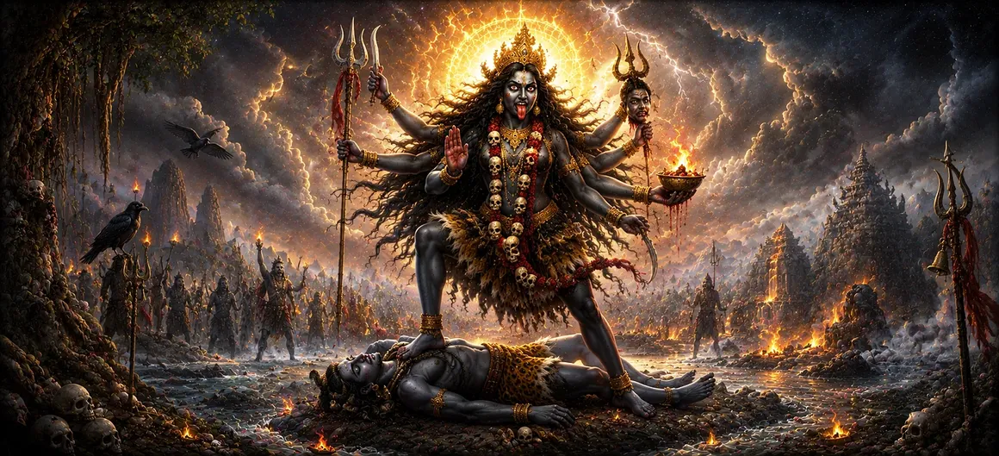

The Incarnation of Mahakali
Following the account of the miraculous birth of Sage Vyasa in Chapter 44, the forty-fifth chapter of Uma Samhita turns its focus toward the supreme cosmic power and fierce manifestation of Goddess Mahakali.
This chapter unfolds the profound mystery behind the divine descent of Mahakali, exploring her role as the ultimate destroyer of ignorance, ego, and cosmic disturbance.
Through sacred verses, the text reveals how her fearsome form is actually a vessel of supreme compassion and absolute protection for the universe.
Chapter 45 Highlights
Cosmic Manifestation
Describes the awe-inspiring and fiery descent of Goddess Mahakali.
Annihilation of Evil
Details her unstoppable power in destroying demonic forces and ignorance.
Mastery Over Time
Highlights her identity as Kala (Time), transcending all mortal limitations.
Protection of Devotees
Emphasizes her fierce maternal love and absolute shelter for true seekers.
Shiva's Consort Shakti
Explores her inseparable unity with Lord Shiva in maintaining cosmic balance.
Path to Liberation
Reveals how meditating on her form cuts through the bonds of worldly illusion.
Core Topics in This Chapter
- 01 The Cosmic Necessity for Mahakali's Advent →
- 02 Description of Her Terrifying Yet Auspicious Form →
- 03 Annihilation of Inner Darkness and Ignorance →
- 04 The Harmonious Synergy of Shiva and Mahakali →
- 05 Dispelling Fear and Granting Ultimate Courage →
- 06 Mahakali as the Embodiment of Cosmic Time →
- 07 Methods of Reverence and Devotional Surrender →
- 08 Bestowing Grace upon Sages and Devotees →
- 09 Awakening Kundalini and Higher Consciousness →
- 10 Transition to the Incarnation of Mahalakshmi →
The Cosmic Necessity for Mahakali's Advent
Chapter 45 opens by explaining why the supreme goddess manifests in her fiercest form, Mahakali, whenever adharma and ego threaten to overwhelm cosmic order.
Her descent is not born of anger in the human sense, but is a necessary corrective force of nature to restore equilibrium.
Description of Her Terrifying Yet Auspicious Form
The text vividly details the form of Mahakali: dark as the endless night, adorned with divine symbols, holding weapons of cosmic justice, and transcending the boundaries of time and mortality.
Though terrifying to the uninitiated, her form is the ultimate shelter for the sincere devotee.
Annihilation of Inner Darkness and Ignorance
Mahakali's primary spiritual function is the swift destruction of inner spiritual darkness, ego, and deep-seated ignorance that bind the human soul to material illusion.
Her sword slices through illusion with absolute precision.
The Harmonious Synergy of Shiva and Mahakali
The chapter highlights the profound truth that Mahakali and Lord Shiva are fundamentally one—Shiva represents supreme consciousness, while Mahakali represents dynamic, active cosmic energy.
Without Shakti, consciousness is inert; without consciousness, energy lacks direction.
Dispelling Fear and Granting Ultimate Courage
Those who meditate on Mahakali conquer the primal fear of death and change, realizing that the Mother of the Universe protects her children through all cycles of creation and destruction.
She instills absolute fearlessness in the hearts of the righteous.
Mahakali as the Embodiment of Cosmic Time
As the feminine counterpart of Mahakala, the Goddess embodies time itself—she who consumes all things at the end of epochs, clearing the path for new creation.
Nothing escapes her all-encompassing cosmic vision.
Methods of Reverence and Devotional Surrender
The text outlines how devotees should approach Goddess Mahakali with purity, unwavering faith, and complete surrender of ego, rather than fear.
True devotion unlocks her boundless compassion and grace.
Bestowing Grace upon Sages and Devotees
Sages and spiritual practitioners who seek her refuge are blessed with profound inner vision, spiritual strength, and the ultimate realization of the divine matrix.
Her grace transforms ordinary seekers into liberated masters.
Awakening Kundalini and Higher Consciousness
In esoteric terms explained within the tradition, Mahakali represents the dormant spiritual energy (Kundalini) coiled within human beings, waiting to rise toward supreme consciousness.
Her awakening brings about total spiritual transformation.
Transition to the Incarnation of Mahalakshmi
Having revealed the fierce cosmic energy and protective power of Mahakali in Chapter 45, the narrative seamlessly flows into Chapter 46.
The text prepares the reader to explore the graceful and sustaining manifestation of Goddess Mahalakshmi next.
The exploration of the divine feminine facets deepens continuously.
Key Teachings of Chapter 45
Fierce Grace
Mahakali's terrifying form is a protective expression of absolute maternal love.
Ego Destruction
True spiritual progress requires the swift cutting away of ego and illusion.
Time Transcendence
She is the mistress of Kala, controlling the cycles of creation and dissolution.
Shiva-Shakti Unity
Consciousness (Shiva) and Energy (Shakti) are eternally inseparable.
Absolute Fearlessness
Surrender to her grace completely removes the fear of death and change.
Inner Awakening
She represents the dormant spiritual energy within that awakens to truth.
Spiritual Reflection
Chapter 45 of Uma Samhita provides a profound meditation on the terrifying yet deeply compassionate form of Goddess Mahakali. While human minds often recoil from the imagery of fierce destruction, the Shiva Purana reminds us that destruction is merely the removal of what is false, decayed, and obstructive to our spiritual evolution. Mahakali cuts down our inner demons—pride, greed, and ignorance—with the precision of a loving mother clearing thorns from her child's path. By embracing her as the embodiment of time and cosmic energy, we learn to let go of our clinging attachments and discover unbreakable courage within.
Living the Message of Chapter 45
Confront your inner weaknesses and bad habits with fierce determination, treating them with the transformative power of Mahakali's sword.
Cultivate fearlessness in the face of life's inevitable changes, remembering that time is governed by divine cosmic order.
Approach spiritual practices with total surrender and unwavering devotion rather than hesitation or superficial attachment.
Key Spiritual Concepts
The fierce, primordial form of the Goddess representing supreme cosmic energy and time.
Cosmic Time, which consumes all material forms and drives the cycles of evolution.
The dynamic feminine energy of the universe, inseparable from Shiva's consciousness.
Unrighteousness, ignorance, and egoistic disorder that disrupts cosmic balance.
The dormant spiritual energy coiled within the seeker, awakening toward realization.
The primal material nature through which cosmic manifestation operates.
Chapter Summary
Uma Samhita Chapter 45 explores the divine incarnation and fierce cosmic manifestation of Goddess Mahakali. It details her role in annihilating adharma, destroying inner ignorance, and acting as the embodiment of cosmic time and active energy alongside Lord Shiva. By emphasizing her protective maternal love and the path of absolute surrender, the chapter inspires devotees to conquer fear and ego, setting a powerful foundation for the introduction of Goddess Mahalakshmi in Chapter 46.
Frequently Asked Questions
① What is the primary focus of Uma Samhita Chapter 45?
The primary focus is the divine incarnation, fierce form, and cosmic role of Goddess Mahakali in destroying evil and protecting the universe.
② How does Chapter 45 follow Chapter 44?
After narrating the miraculous birth of Sage Vyasa in Chapter 44, Chapter 45 transitions into exploring the supreme cosmic energy and manifestation of Goddess Mahakali.
③ What does the form of Mahakali represent?
Her fierce form represents the absolute power of time, destruction of ego and ignorance, and ultimate protection of creation.
④ How does Chapter 45 connect to Chapter 46?
Chapter 45 flows directly into Chapter 46, which continues the sequence of divine manifestations with the incarnation of Mahalakshmi.
⑤ What is the spiritual significance of worshiping Mahakali?
Worshiping Mahakali helps devotees conquer inner fears, annihilate inner darkness, and attain ultimate liberation through divine grace.
⑥ How is Mahakali related to Lord Shiva in this context?
Mahakali is the inseparable primordial energy (Shakti) of Lord Shiva, working in complete harmony with cosmic order.
“As the embodiment of time and fierce cosmic grace, Goddess Mahakali annihilates inner darkness and protects her devotees with absolute maternal love.”
Continue Through Uma Samhita
Chapter 45 explores the fierce incarnation of Goddess Mahakali. With this chapter concluded, proceed into Chapter 46 to discover the incarnation of Mahalakshmi.